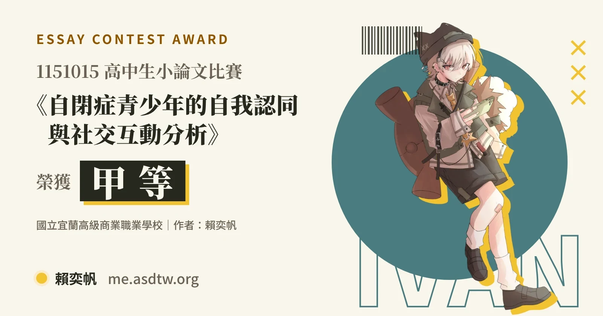
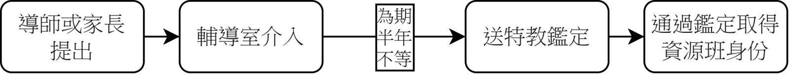
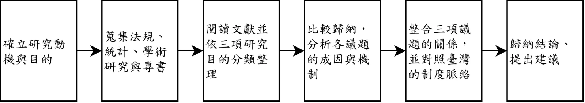
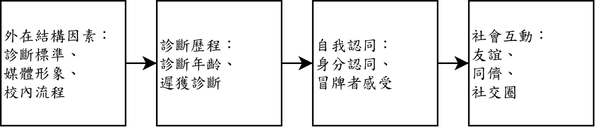

自閉症青少年的自我認同與社交互動分析
1151015 高中生小論文比賽甲等作品全文：從診斷、認同到社交，看見自閉症青少年。

官方得獎作品
本文為比賽得獎作品全文，原始檔案可在官方網站查閱：https://www.shs.edu.tw/Customer/Winning/LinkEssayWorkFile/131080?key=020403
壹、前言
一、研究動機
自閉症譜系障礙（Autism Spectrum Disorder）是一種先天的神經發展差異：在理解他人情緒、眼神與表情、維持雙向對話等方面，與主流社會的常見模式不同。有些自閉症者有固定的作息、對某些主題有深入且持久的專注，也可能對特定感官刺激特別敏感或不敏感。
財團法人中華民國自閉症基金會（2026）整理衛生福利部統計數據後說明，近二十年來，臺灣自閉症確診人數呈上升趨勢，2025 年臺灣自閉症登記人數已達 24,586 人，相較早期僅數千人的規模，呈現明顯成長。
然而，「自閉症」或「亞斯伯格症」在坊間傳聞中，長期被塑造成「別人家的高智商天才兒童」：無論是別出心裁的藝術家、獨樹一幟的音樂人，或是數學天才神童，似乎都是自閉症的「標配」。李明瑾（2011）對新聞報導的研究即發現，記者偏好報導患者個案，特別是「天才型」的患者。這類印象使自閉症者與外界對自閉症的想像之間出現落差。
自閉症等精神與行為障礙普遍受到污名化與刻板印象影響。自閉症者不一定能在青少年時期獲得診斷，即使取得醫療體系的認證，也可能出現「冒牌者感受」，認為自己與「典型」自閉症不同、診斷可能有誤（Rowley & Savickaite, n.d.），或是不願意承認、公開自己的自閉症身分。青少年期又正是形成自我認同的關鍵階段（Erikson, 1968）。
綜上所述，自閉症人數的成長與社會對自閉症的傳統印象，都會牽動自閉症者如何看待自己。這些議題與青少年的生活密切相關，值得進一步了解。
二、研究目的
本研究旨在透過文獻分析，了解自閉症青少年對自閉症的自我認同與社交互動情形，具體目的如下：
（一）探討自閉症之診斷與遲獲診斷情形。
（二）探討自閉症青少年對自身自閉症身分的認同情形，以及神經多樣性典範對其認同的意涵。
（三）探討自閉症青少年的友誼、同儕互動與社交圈特徵。
貳、文獻探討
一、自閉症譜系障礙的定義與診斷
雖然不同的自閉症者會表現出截然不同的特質，臨床醫學仍需要一套統一的診斷標準。《精神疾病診斷與統計手冊》第五版（DSM-5；徐翊健等譯，2018）是美國精神醫學學會於 2013 年出版的診斷工具書，在臺灣也普遍適用。吳佑佑（2016）指出，其診斷標準大致可分為兩大面向：「社交溝通與互動上有質的障礙」，以及「侷限且重複的行為、興趣或活動」。
二、自閉症青少年的診斷歷程與遲獲診斷
在臺灣，學生若在校園中被注意到有特殊需求，通常會經過學校輔導與特教鑑定的流程。《學生輔導法》（2024 年 12 月 18 日）第六條規定，學校應視學生身心狀況及需求，提供發展性輔導、介入性輔導或處遇性輔導之三級輔導。《特殊教育法》（2023 年 6 月 21 日）第十七條、第十九條則規定高級中等以下學校須設特殊教育專責單位，並授權教育部訂定《特殊教育學生及幼兒鑑定辦法》（2026 年 4 月 1 日）。筆者將上述規定整理為簡化的流程如圖一。

圖一資料來源：筆者依特殊教育學生及幼兒鑑定辦法（2026）繪製
從流程可以看出，學生能否進入鑑定，起點往往是導師或家長「提出」。這使得診斷與否，部分取決於教師的敏銳度與對自閉症的認識。歐思賢（2021）指出，輕度自閉症女性被辨識及診斷的比率不足。Bargiela et al.（2016）針對遲獲診斷的自閉症女性所做的研究，也聚焦於女性自閉症表現與診斷之間的落差，並探討這些女性長期未被辨識的經驗。這些研究顯示，即使臺灣特殊教育體系已有輔導與鑑定的機制，仍可能因為導師的敏銳度、對自閉症的刻板印象，以及學生的「偽裝」（masking），而讓學生錯過在兒童時期獲得輔導資源介入、醫療診斷與自我認識的機會。
French 與 Cassidy（2024）以質性研究探討遲獲診斷的自閉症或注意力不足過動症者的經驗，並以「困難模式」（hard mode）形容他們過去的生活經驗，顯示在確診之前，當事人往往得獨自面對許多無法理解的困境。
三、自閉症自我認同之重要性
自我認同的概念會隨時代、社會、環境與文化而不同。Erikson（1968）將青少年期視為形成自我認同的關鍵時期，自我認同指個人對自身特性與連續性的主觀認知，以及與所屬群體共有價值的歸屬感。陳貽婷、林彥希（2023）指出，自我認同的不確定性與廣泛的社會心理問題有關，例如焦慮、憂鬱、攻擊性、人格病理及物質使用。
此外，Botha et al.（2022）以「自閉症就是我」（Autism is me）為題，探討自閉症者如何理解自閉症與污名；鍾昀芝（2023）《原來我有自閉症》與陳豐偉（2018）的著作，則呈現當事人在得知診斷後，重新理解自身經驗的歷程。這些研究與自述都顯示，自閉症不只是醫學標籤，也是當事人整理自我、面對外界眼光的一個身分。
四、冒牌者感受與神經多樣性
根據 Rowley 與 Savickaite（n.d.）的研究，這是首篇針對自閉症成人確診後產生懷疑感受所進行的專門研究。該研究訪談五位自閉症女性，分析發現個案懷疑自己是否為「真正自閉症」的原因相當多元：
（一）自身特質與主流媒體及影視作品呈現的刻板印象不符，例如「男孩」「喜歡火車」，或是「更嚴重」「顯而易見」等形象。
（二）當個案把自己的經驗與這些主流標準相互比對時，會產生「這似乎不是自閉症會做的事情」的自我懷疑。
（三）部分個案因為生活自理能力或工作表現較佳，使他人（甚至自己）認為「這樣的表現不像是自閉症」，進而懷疑診斷本身的正確性。
同一研究中，部分受訪者也指出，「光譜」與「多樣性」的概念可以化解這種感受：它能打破極端案例帶來的刻板印象，讓人跳出「符合」或「不符合」自閉症的二選一判斷。
與「多樣性」相關的，是近年的「神經多樣性」一詞，常被歸於 Judy Singer，但 Botha et al.（2024）指出，這個概念其實是自閉症社群集體發展出來的，而非單一作者的創見。Walker（2014）將神經多樣性定義為人類心智的多樣性，亦即人類物種內神經認知功能的變異；「神經多樣性典範」則是看待這種多樣性的一種觀點，主張它是自然而有價值的，並認為只存在一種「正常」大腦的想法是文化建構的產物（Walker, 2014）。
五、自閉症青少年的社會互動與社交圈
Milton（2012）提出「雙重同理心問題」（double empathy problem）這個具有突破性的概念。自閉症長期被視為「心智理論缺陷」，亦即缺乏理解他人心智的能力；雙重同理心問題則主張，並非自閉症者天生較缺乏同理他人的能力，而是自閉症者與神經典型者的溝通方式猶如不同的作業系統，彼此難以互通，困難出在雙方之間，而非單方面的缺陷。兩種觀點的差異整理如表一。
表一：雙重同理心問題
| 傳統觀點 | Milton（2012） |
|---|---|
| 自閉症人士缺乏「心智理論」能力 | 雙方都缺乏理解對方心智的能力 |
| 問題出在自閉症個體的「缺陷」 | 問題出在互動本身是關係性的 |
| 神經典型人是擁有「正常的」同理心 | 神經典型人士對自閉症人士的同理經常是不準確且具有侵入性的 |
| 需要「治療」或「修正」自閉症人士 | 需要雙向的理解與相互性 |
表一資料來源：筆者依 Milton（2012）製作
Crompton et al.（2020）的研究以實驗檢驗了這個概念。研究將 72 位成人分為三組配對：自閉症配對、非自閉症配對與混合配對，再由 78 位觀察者以相同量表評估各配對的「互動融洽度」。結果顯示，混合配對的融洽度最低；研究標題亦直指，影響融洽度的是「神經類型是否相符」（neurotype-matching），而不是「是否為自閉症」。
參、研究方法
一、研究方法
（一）文獻分析法
透過蒐集、閱讀並系統性地整理既有的法規、統計資料、學術研究與專書，從中歸納出可回應研究目的的共通發現，並比較不同文獻之間的異同。
二、資料分析方式
文獻的分析分為以下三個步驟：
（一）依三項研究目的將文獻內容分類，整理每篇文獻對診斷歷程、自我認同與社會互動的主要發現。
（二）比較各文獻的共通處與歧異處，辨識反覆出現的成因與機制。
（三）將歸納結果對照臺灣的制度脈絡，提出結論與建議。
表二：研究目的與文獻分析問題
| 研究目的 | 分析問題 | 主要依據與文獻 |
|---|---|---|
| 診斷延遲與歷程 | 診斷為何常常延遲？延遲與哪些制度、性別與個人因素有關？延遲帶來什麼後果？ | 中華民國相關法規、許雅淑、李宗義譯（2025）、陳豐偉（2018）、歐思賢（2021）、Bargiela et al.（2016）、French 與 Cassidy（2024） |
| 自我認同 | 理解自閉症身分對青少年有何意義？為何會產生「冒牌者」的懷疑？如何化解？神經多樣性典範對認同有何意義？ | Erikson（1968）、陳貽婷、林彥希（2023）、陳豐偉（2018）、French 與 Cassidy（2024）、Rowley 與 Savickaite（n.d.）、李明瑾（2011）、Botha et al.（2022）、Botha et al.（2024）、Walker（2014） |
| 友誼、同儕互動與社交圈 | 社交困難應如何理解？同類型與混合配對的互動有何差別？ | Milton（2012）、Crompton et al.（2020） |
表二資料來源：筆者自行製作
三、研究流程

圖二資料來源：筆者自行繪製
四、研究架構

圖三資料來源：筆者自行繪製
肆、研究分析與結果
一、診斷延遲與診斷歷程之分析
（一）診斷標準的起點：以男孩為模型
診斷歷程的第一個關卡，是診斷標準本身；許雅淑、李宗義譯（2025）一書指出，「事實上，現有的自閉症診斷工具開發時想的都是有錢的白人、符合性別規範的男孩」。陳豐偉（2018）也指出，無論是過動症或自閉、亞斯，一開始都被當作男童的疾病。筆者推論：此等「男孩模型」所忽略的對象並非只限於「女性」，無論性別，只要表現方式不符合傳統性別規範的青少年，從標準的層次就較不容易被辨識。
（二）臺灣校內流程的分析
依圖一，流程的起點是導師或家長提出，其後由輔導室介入，觀察期過後才送特教鑑定。從這個流程可以看出兩個值得注意的問題：第一，起點取決於導師或家長的觀察，因此導師對自閉症的認識與刻板印象，會直接影響學生能否被看見；第二，輔導室介入至送鑑定之間有為期半年的觀察期。筆者推論：對於善於偽裝的學生而言，觀察期內若表現看似穩定，就可能被判斷為「不需要進一步鑑定」，因而延後診斷。
（三）偽裝與性別：被忽略的群體
就性別而言，歐思賢（2021）指出輕度自閉症女性被辨識及診斷的比率不足，Bargiela et al.（2016）則探討遲獲診斷的自閉症女性長期未被辨識的經驗。前者以臺灣校園為背景，後者以成年後的回溯為主，場域不同，卻都顯示女性的表現不符合既有的診斷想像而被漏接。就機制而言，許雅淑、李宗義譯（2025）所討論的「偽裝」，指部分自閉症者會壓抑或掩飾自己的特質以融入群體，使特質更不明顯。綜合三者，筆者推論：越是表現「不明顯」的學生，越容易被制度漏接，而偽裝與性別偏誤可能同時存在，並與前述導師觀察與觀察期的設計疊加。
（四）遲獲診斷的代價
確診之前，當事人往往獨自面對難以理解的困境與人際誤會（French & Cassidy, 2024；陳豐偉，2018）。換言之，診斷延遲的代價有兩層：一是錯過早期的輔導與醫療資源，二是長期缺乏理解自己的語言。筆者推論：對青少年而言，後者的影響可能更為關鍵。青少年期正是形成自我認同的階段（Erikson, 1968），若此時只能以「我哪裡有問題」解釋自己的經驗，日後確診便需要重新整理一段已累積的自我認識。
（五）小結
綜合上述，診斷的時間點並不單純等於特質出現的時間，而是診斷標準的「男孩模型」、校內流程對導師與家長觀察的依賴，以及偽裝與性別偏誤共同作用的結果。這些因素使表現不符合典型的青少年更容易被漏接，不僅錯過早期資源，也長期缺乏理解自己的語言。
二、自我認同之分析
（一）認同任務與理解自己
對自閉症青少年而言，除了一般青少年都要面對的認同任務（見貳之三），還多了一個課題：如何看待「自閉症」這個身分。陳豐偉（2018）指出，在得知自己有自閉症特質之後，過去經常得罪人、被厭惡而不自知、對話中的誤會與爭吵等困惑，都能一一被解開。French 與 Cassidy（2024）也指出，能夠理解「自己為何與眾不同」以及「為何有時會陷入掙扎」，是協助參與者在生活中做出積極改變的關鍵。這些文獻顯示，診斷提供的不只是標籤，更是理解自己經驗的一套解釋。
（二）冒牌者感受
然而，取得診斷並不保證能認同診斷。Rowley 與 Savickaite（n.d.）訪談五位自閉症女性，發現個案懷疑自己「不是真正自閉症」的三項原因（見貳之四），皆與大眾對「典型自閉症」的單一想像有關。筆者推論：這與李明瑾（2011）指出記者偏好報導「天才型」個案互相呼應，冒牌者感受的來源之一，可能是大眾媒體長期選擇性呈現所形成的社會想像。
（三）「光譜」與神經多樣性
Rowley 與 Savickaite（n.d.）的部分受訪者以「光譜」與「多樣性」的概念化解冒牌者的懷疑，因為這些概念讓人看見自閉症者之間表現的差異，而不必在「符合」與「不符合」之間二選一（見貳之四）。另一方面，Botha et al.（2022）探討自閉症者如何理解自閉症與污名，提醒我們認同不只是個人的內在歷程，也與外界污名有關。筆者推論：「神經多樣性典範」（Walker, 2014；見貳之四）質疑「只存在一種正常大腦」的標準，而冒牌者的懷疑正是來自自身與「典型自閉症」標準的落差，因此這個典範可能從根源上削弱這種懷疑；若青少年能在確診的同時接觸這些概念，認同就可能較有彈性，較不容易因為「不夠典型」而動搖。
（四）小結
綜合上述，自閉症身分的認同，與當事人如何理解自閉症密切相關。診斷若能提供理解自身經驗的解釋，有助於減少困惑。但當自己與大眾對「典型自閉症」的單一想像不符時，即使已取得診斷，仍可能懷疑自己是「冒牌」。相對地，「光譜」與神經多樣性典範讓人跳出「符合」或「不符合」的二選一，認同可能因而較有彈性。
三、友誼、同儕互動與社交圈之分析
（一）從「缺陷」到「雙向」：看待社交困難的角度
雙重同理心問題（Milton, 2012；見表一）將社交困難的來源，由自閉症者個人的「缺陷」，轉為自閉症者與神經典型者之間的落差。這個轉變的意義在於：評估自閉症青少年的社交情形時，不應只問「他為什麼不會社交」，也要問「身邊的人是否也在嘗試理解他」。Crompton et al.（2020）的實驗結果（見貳之五）支持這個觀點：影響互動融洽度的是神經類型是否相符，而不是是否為自閉症。
（二）對青少年社交圈的意涵
筆者推論：青少年的社交圈可能以同班同學、社團與網路社群為主；在以神經典型者為多數的校園裡，自閉症青少年容易被誤讀為「不會社交」或「難相處」，並因此更有動機偽裝，以換取被接納。反過來說，能遇到理解自己、或同為自閉症的朋友，可能是友誼品質的重要條件。
（三）小結
綜合上述，自閉症青少年的社交困難是關係性的、雙向的，不宜只歸因於個人。互動是否融洽，與雙方神經類型是否相符有關；在以神經典型者為多數的校園裡，自閉症青少年容易被誤讀，並可能以偽裝換取接納，而同儕中是否有理解自己的對象，可能影響友誼品質。
四、整合分析與討論
（一）文獻分析結果彙整
表三：整合研究分析與討論
| 議題 | 主要發現 | 文獻依據 |
|---|---|---|
| 診斷延遲與歷程 | 診斷標準以男孩為模型；校內流程起點依賴導師與家長觀察；偽裝與性別使部分學生被漏接；遲獲診斷使當事人長期缺乏理解自己的語言 | 特殊教育學生及幼兒鑑定辦法（2026 年 4 月 1 日）、許雅淑、李宗義譯（2025）、陳豐偉（2018）、歐思賢（2021）、Bargiela et al.（2016）、French 與 Cassidy（2024） |
| 自我認同 | 理解自己能解開困惑；與「典型自閉症」想像不符使人懷疑自己是「冒牌」，媒體的「天才型」形象可能是來源之一；「光譜」與神經多樣性典範可能化解二選一的判斷 | 陳豐偉（2018）、French 與 Cassidy（2024）、Rowley 與 Savickaite（n.d.）、李明瑾（2011）、Botha et al.（2022）、Walker（2014） |
| 友誼、同儕互動與社交圈 | 社交困難是雙向的；混合配對的融洽度最低，神經類型是否相符影響互動；在神經典型者為多數的校園中易被誤讀而偽裝，同儕中有無理解者可能影響友誼品質（筆者推論） | Milton（2012）、Crompton et al.（2020） |
表三資料來源：筆者自行製作
（二）三項議題的相互關係
三項議題並非各自獨立，而可能構成一條相互強化的鏈。診斷標準、媒體形象與校內流程等結構因素，使部分青少年遲獲診斷；缺乏診斷時，他們沒有理解自己的語言，只能靠偽裝維持人際關係；偽裝與被誤讀又使互動更為辛苦，並加深「我哪裡有問題」的自我懷疑；即使後來確診，過去累積的困惑與主流刻板印象，也可能讓他們懷疑自己是「冒牌」。反過來，若能及早被辨識、取得「光譜」等理解自己的概念，並遇到能彼此理解的同儕，這條鏈就可能轉為正向循環。
（三）對臺灣脈絡的討論
如前言所述，臺灣自閉症登記人數逐年成長（財團法人中華民國自閉症基金會，2026），但診斷人數增加不等於每位青少年都能及時被看見：校內流程以導師或家長的觀察為起點，觀察期內表現穩定的偽裝者又可能被延後鑑定，教師與家長對自閉症多元表現的認識因而成為關鍵。此外，李明瑾（2011）指出媒體偏好報導「天才型」個案；筆者推論，這類形象若未改變，即使制度完善，青少年仍可能在確診後陷入冒牌者的懷疑。這說明制度（早期辨識）與觀念（刻板印象）兩方面都需要同步調整。
伍、研究結論與建議
一、研究結論
依據文獻分析，本研究的結論如下：
（一）診斷的落差是結構性的
診斷標準的性別偏誤、媒體的刻板印象、學生的偽裝，以及校內流程對導師觀察的依賴，使部分自閉症青少年遲獲診斷，並因此錯過早期的支持與自我認識。
（二）自我認同的關鍵，在於如何理解自閉症
理解自己為何與眾不同，能減少困惑並促進積極改變；但當主流形象與個人經驗不一致時，青少年可能懷疑自己是「冒牌」。「光譜」與神經多樣性的概念有助於化解這種懷疑。
（三）社交困難是關係性的
依雙重同理心問題與相關實驗，互動不順不應只歸因於自閉症者；社交圈中是否有互相理解的對象，可能影響友誼品質。
二、建議
（一）對學校與教師
教師需加強對自閉症多元表現（尤其是女性、輕度及善於偽裝者）的認識，不以「天才」或「男孩」形象作為判斷依據，並在三級輔導流程中結合導師、輔導室與家長的資訊，同時留意觀察期內「表現穩定」的學生是否只是以偽裝維持表現，使有需要的學生能更早被看見。
（二）對同儕與社會
以「雙重同理心」的角度看待互動，將誤會視為雙方溝通方式的差異而非單方面要求自閉症者改變，同時期待媒體報導能呈現自閉症的多樣面貌，而不只聚焦於天才型個案。
（三）對自閉症青少年與家庭
以「光譜」的概念理解自己，不必用單一刻板形象衡量自己是否「夠自閉」，並在適當時機尋找能互相理解的同儕或社群，同時留意自己是否長期靠偽裝來維持關係。